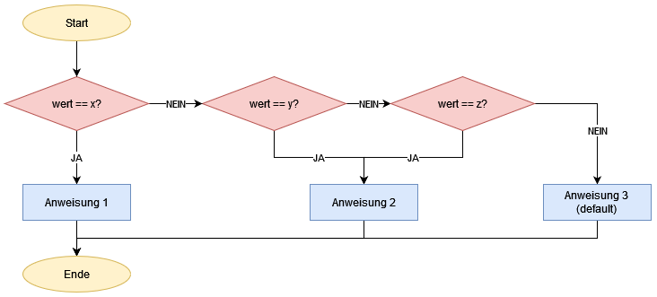

Wir haben bereits gelernt, dass wir mithilfe von If-Anweisungen in unserem Programm Werte bzw. Bedingungen abfragen können und so unseren weiteren Programmablauf beeinflussen können. Mehrere If-Anweisungen hintereinander können zum Beispiel verwendet werden, um mehrere Optionen abzufragen.
Stellen wir uns vor wir wollen ein Programm schreiben, das analysiert, ob es sich bei einem Wochentag um einen Tag unter Woche oder am Wochenende handelt. Dies könnte in einer if-Abfrage folgendermaßen aussehen:
String tag = "Montag";
String typ = "";
if (tag == "Montag" || tag == "Dienstag" || tag == "Mittwoch" || tag == "Donnerstag" || tag == "Freitag" ) {
typ = "Arbeitstag";
} else if( tag == "Samstag" || tag == "Sonntag") {
typ = "Wochenende";
} else {
typ = "falsche Eingabe";
}
println("Ergebnis: " + typ);Wir fragen hier relativ viele Einzelfälle ab. Insgesamt gibt es 8 Vergleiche. Hier sind 2 Aspekte auffällig:
- Die Bedingung ist in seiner Art immer gleich:
- Die Variable
tagwird mit einemStringverglichen.
- Die Variable
- Die möglichen Optionen sind bekannt,
- es handelt sich um die 7 Wochentage (und die Abfragen nach einer Fehleingabe).
Das lässt sich sehr gut mit einem switch (auch Switch-Case genannt) etwas übersichtlicher lösen.
Aufbau
Switch-Statements können verwendet werden, wenn die Möglichkeiten, die eintreffen können, bekannt sind und man überprüfen möchte, welche eingetroffen ist.
Ein möglicher Aufbau eines switchs ist wie folgt:
switch(WERT) {
case x:
// ANWEISUNG
break; // optional
case y:
case z:
// ANWEISUNG
break;
default:
// ANWEISUNG
}switch: Ganz oben steht in den Klammern hinter switch der WERT, der überprüft werden soll. Es kann sich hierbei auch z.B. um eine Rechenoperation mit Variablen handeln. In diesem Fall wird dann das Ergebnis der Operation verwendet. Wichtig: Der WERT kann keine boolesche Variable, ein boolescher Ausdruck (wie z.B. x >=0) oder ein Vergleich sein.
case: Im Körper des switch befinden sich die unterschieldichen Fälle (case). case wird für jeden "Fall" benötigt, der zutreffen kann und abgefangen werden soll. Es muss aber nicht jeder case seine eigene ANWEISUNG haben. Es können auch mehrere Fälle zusammengefasst werden (siehe Zeile 5 und 6), in denen dieselbe ANWEISUNG durchgeführt werden soll.
ANWEISUNG: Anschließend folgt hinter dem case und dem WERT ein Doppelpunkt und danach die ANWEISUNG, die ausgeführt werden soll. Die Anweisung wird beendet durch die Kontrollanweisung break. Dieser Befehl sorgt dafür, dass der switch nach dieser Anweisung beendet wird und die Anweisungen der nächsten cases nicht mehr ausgeführt werden. Die break-Anweisung ist optional. Wenn du möchtest, dass nachdem die ANWEISUNG ausgeführt wurde, der switch weiter läuft und auch die weiteren Fälle überprüft, dann kannst du break auch weglassen - zum Beispiel wenn du möchtest, dass die Anweisung in default immer ausgeführt wird.
default: Als letztes siehst du das Stichwort default ohne einen Wert dazu. Der Code dahinter wird ausgeführt, falls keine der oben genannten Möglichkeiten zutrifft. Die default-Anweisung kann auch weggelassen werden, ist aber sinnvoll, um zu vermeiden, dass Variablen "leer" bleiben. tag hätte im Beispiel oben sonst keinen Wert bekommen und das Programm hätte einen Fehler angezeigt.
Als PAP sieht ein Switch übrigens so aus:

Dabei ist auffällig, dass ein Switch keine eigene "Form" hat, sondern einfach die Form für eine logische Verzeigung verwendet. Das liegt daran, dass wir mithilfe eines Switches eigentlich nur mehrere if-Abfragen "zusammenfassen". Die Logik dahinter ist aber dieselbe. Das sehen wir, wenn wir unser Beispiel mit den Wochentagen vom Anfang in einen Switch umwandlen:
String tag = "Montag";
String typ = "";
switch (tag) {
case "Montag":
case "Dienstag":
case "Mittwoch":
case "Donnerstag":
case "Freitag":
typ = "Arbeitswoche";
break;
case "Samstag":
case "Sonntag":
typ = "Wochenende";
break;
default:
typ = "falsche Eingabe";
}
println("Ergebnis: " + typ);
Das Programm macht im Endeffekt genau dasselbe wie zuvor, ist nur etwas übersichtlicher.
Unterschied von switch und if: Das Anwendungsgebiet von Switches und if-Abfragen unterscheidet sich darin, dass Switches verwendet werden, wenn die möglichen Optionen bekannt sind, wohingegen if-Abfragen einen größeren Bereich unbekannter Möglichkeiten abdecken können.
Zusammenfassung
Bei einem switch handelt es sich um eine Kontrollstruktur. Sie wird verwendet, um mehrere mehrere Optionen auf einmal zu überprüfen, z.B. den Inhalt einer Variablen. Dabei wird für jede Option (case) eine andere Anweisung asugeführt. Außerdem hat jeder switch auch eine default Option, die ausgelöst wird, wenn keine der oberen Optionen zutrifft.
Aufbau:
switch(WERT) {
case x:
// ANWEISUNG
break;
case y:
case z:
// ANWEISUNG
break;
default:
// ANWEISUNG
}